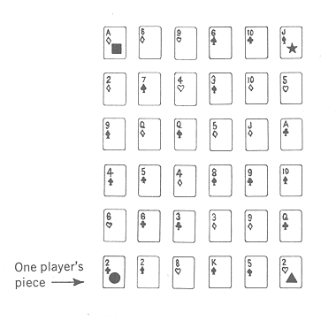
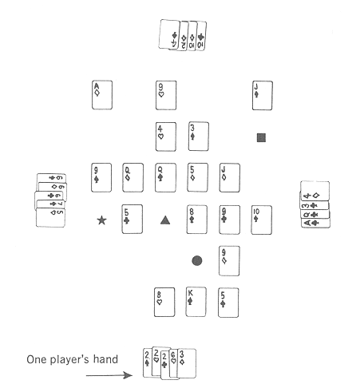

| Here are the complete rules for Switch, as they appeared in my 1963 book, Abbott’s New Card Games. The writing here is a little annoying (in 1963 I thought I was being very clever); so if I get a chance sometime, I’ll revise the writing. I’ll also include a serious discussion of shifting alliances, and I might make some minor changes in the rules. |
For two or four players
|
PARTNERSHIP GAMES are often very annoying, sometimes even unhealthy. For instance, suppose you’re stuck with a bad partner who also happens to be your wife. She makes a particularly stupid play. Your first impulse is to say something to her; but, since most partnership games forbid communication, you must suppress the impulse. Bawling out your wife might betray information about your hand. Instead you reflect darkly on her mistake, magnifying it out of proportion. Only when the game is over do you confront her with The Error. She then calmly explains that hers was the only correct play and your own strategy was faulty. Since you’re forced to admit the truth of her assertion, this reversal further undermines your mental health. Fortunately there’s no need to undergo expensive psychotherapy in order to continue playing partnership games. Switch offers symptomatic relief and attacks the cause of partnership dissent. Specifically, in Switch all the cards are played face up, so that each player has all the information he wants about his partner’s and opponents’ possible plays. There is no rule against communication among players; instead. communication is encouraged. Players who happen to be in partnership will be able to discuss their plans and agree on what moves each should make. The only restriction on these discussions is that they may not be in private; thus the opponents will be able to hear any plans partners choose to discuss. This leads to the interesting situation in which opposing sides not only have total information about each other’s hands but also know pretty much what the others are thinking. Sometimes towards the end of a hand both sides get together and discuss all possible sequences of moves each could make, and in this way a perfect strategy for one side may be discovered. Switch is not, strictly speaking, a partnership game but rather is one of shifting alliances. Each player is scored individually and each works only for himself in terms of the complete game. But during each hand of play, an alliance of two players is formed against the other two; and this alliance lasts through that hand only. This is the part of Switch that allows you to escape bad partners. In every new hand you have a chance to choose a different partner. And your choice does not even have to be made at the beginning of the hand! Instead you can wait to see how the others are doing and you might then be able to join forces with the strongest player. If this seems like too ideal a situation, I should explain that, if someone else makes a choice before you, your partner for the hand is then determined. Also, the player who does the choosing may score only a reduced number of points if his side wins the hand. The question of whether or not to choose a partner or whom to choose is an important part of the strategy. The game for four players is described below and following it is a version for two players. Equipment: | A STANDARD DECK of 52 cards is used. Also, four markers are to be used as pieces representing the four players. Any four objects will work as long as each is distinct from the others. Most often I use the king, queen, knight, and rook from a Chess set. The Deal: | THE CARDS ARE CUT for deal; the player drawing the lowest card is dealer (ace is high). If there is a tie for low, there is another drawing for those who tie. The deal passes to the left after each hand. The deck is shuffled, and the dealer deals out six rows of cards, each row containing six cards face up. The remainder of the deck is placed aside and is not used during the hand. The 36 cards dealt on the table should form a square of straight rows and columns, as in the illustration on the next page. Each player places his piece on the card at the left end of the row (or column) nearest him, as in the illustration. Typical Layout at the Start of a Hand:  Equipment: | THE PLAYERS Move their pieces over this array of cards in a fashion similar to that of board games. Therefore, the array should be thought of as a playing board, with each of the 36 cards representing a space. Later, even though cards are removed from the array, this imaginary board should still be thought of as having 36 spaces. Usually enough cards will remain to indicate where the rows and columns are. Whenever your piece lands on a card, you remove that card from the array and add it to your hand. At the start of each new hand of play, your object is to acquire cards from which you can select the best five-card Poker hand. Later, however, your object may become that of seeing that your partner acquires the best hand. Readers who are not familiar with Poker hands will find them described at the end of these rules. Typical Layout During the Middle of a Hand:  Moves: | THE FIRST move is made by the player to the left of the dealer, and after him the turn passes to the left. In his turn a player moves his piece any number of spaces along a row or column (but never diagonally), provided that this move is not made onto or over a space occupied by another player’s piece. A player may make his move onto or over blank spaces as well as spaces occupied by cards. If a player ends his turn on a card, he removes that card and places it face up in front of him. Cards thus acquired become part of the player’s hand but must remain visible. If a player ends his turn on a blank space, he receives no card during that turn. A player must move one or more spaces each time it is his turn, unless he is completely blocked by other pieces, in which case he simply misses a turn. Since a player must move his piece each turn, he may not use his first turn to acquire the card his piece is on at the start of a hand (although he may come back for it later). An exception is made in the rare instance when the dealer finds he cannot move during his first turn, since other players have blocked him completely. In this case the card he is on becomes part of his hand. Conversation Before Alliances Are Formed: | ALLIANCE are usually not formed until after several moves have been made in a hand of play. Although this means there are no partnerships discussing their strategy, the conversation may be even more lively at this point. What is said, of course, depends on the personality of the group, but the following are some suggestions of comments that have proved useful: If one player is acquiring a good hand, point out that he should be stopped from getting other valuable cards. This is especially useful if you are unable or unwilling to stop him yourself. (A player may be blocked temporarily from getting a card if another player moves his piece onto a space between that player’s piece and the card. A player may be stopped permanently from getting a card if another player picks up that card instead.) If another player points out that you yourself are acquiring a good hand, cry poverty. Say, “Me! I’ll only have a lousy straight. Him! He’s the one you should worry about.” An alternative strategy is to call attention to the strength of your position in hopes of finding someone who will want you as a partner. If you do make a move that will block a strong player, state (humbly) what a noble sacrifice you are making for the other two players in wasting your own turn to block the strong player. This is even more effective if you only appear to be blocking the strong player but are actually moving into a position where you can acquire much better cards for yourself. (In case you consider such deceptions and admonitions to be undignified in a game of skill, it should be noted that game theory concerns itself with conflicts quite similar to these and with the problems involved in shifting alliances.) Alliances: | A PLAYER may form an alliance during his turn and before he moves his piece for that turn. He forms the alliance simply by stating that he is entering a partnership with a certain other player. He is then allied with that player against the other two players for the duration of that hand. The partner chosen cannot refuse the offer of partnership. For example, suppose the four players are Smith, Jones, Robinson, and Brown. Smith has given up hope of obtaining the best hand, but he thinks Jones is in a good position to win, especially if he gives Jones some help. It is Smith’s turn to move; so he says something to this effect: “I hereby form a partnership with Jones.” Thus Smith and Jones are allied against Robinson and Brown. As indicated, Jones has no say-so as to whether he wants Smith for a partner, nor can Robinson and Brown avoid being allied at this point. During each hand there is only one opportunity for a choice to be made, because when one player chooses a partner, that defines the opposing sides for the rest of the hand. The existence of partnerships does not change the rules of play. The partners do not combine their hands, but each continues to acquire cards for himself. The only way a player may help his partner is by using his piece to block opponents’ pieces or by picking up cards that might be valuable to the opponents. The only change that results from the formation of partnerships is in the scoring at the end of the hand. Each player scores differently depending on whether the winner of the hand is the one who chose a partner, whether he is the partner chosen, or whether he is one of their opponents.
The player who chose a partner will score 3 points only if his partner wins the hand. If he himself wins, no one scores anything. The player who was chosenwill score 7 points only if he himself wins. If the winner is either one of the players opposing the one who chose and the one chosen, this winner will score 6 points and his partner will score 4. As you can see, the player who does the choosing gives himself a handicap. He can score only if his partner wins, and then he scores only 3 points while his partner scores 7. This player, therefore, will work only for his partner. The players opposing the one who chose are in a partnership of a different nature. They can score if either one of them wins; however, the winner scores 6 points and his partner 4. This 2-point difference can cause some conflict of interest. Either of these players would be happy to see his partner win, but he may not always help his partner, since he can score more by winning himself. Their alliance is therefore not as tightly knit as the one between the other two players. These rules will be further clarified by the example of scoring given below. If no player were to choose a partner during a hand, the winner would score 10 points. Ending a Hand: | THEORETICALLY the hand ends when all the cards in the array have been picked up or when blocking by one side makes it impossible to acquire any more cards. In practice, though, the players can end the hand when they see that one of them is in an unbeatable position. The winning player is the one who has acquired five cards that make the best poker hand. Even if the winning player doesn’t want to win (as is sometimes the case if he is the one who chose his partner), his best selection of five cards is still used instead of any other of his cards. If there is a tie for best hand, there is no score. After each player’s score is recorded, all 52 cards are shuffled together, and a new array of cards is then dealt. | Scoring 16 or More Points: | TO WIN THE GAME a player needs 20 points. However, when a player’s total score nears 20, the others often gang up on him to keep him from winning. Even his partner might want to play against him. To prevent a temporary stalemate from occurring at this point, any player who has a total score of 16 or more points is given a special power. He makes the moves of his partner’s piece as well as his own. This power may be used to help or hinder the partner. A player with 16 or more points may try to achieve a win for his partner, or he may make sure his partner doesn’t win. This may seem like a drastic weapon to give a player who is already ahead, but it is the only means a leading player will have for breaking the coalition that is sure to be formed against him by the other three players. If two players in partnership both have scores of 16 or more points, then this power does not apply, even if one of the players has a higher score than the other. Neither player will be able to move the piece of the other.
Winning the Game: | WHEN A PLAYER’S total score reaches 20 points, he wins the game. However, if two partners both reach 20 in the same hand, the one who then has the highest score wins. (This may serve as a restraint on your choice of partner towards the end of a game.) If there is a tie for highest at this point, additional hands are played until one player (not necessarily one of those tying originally) gets the highest score. The following is an example of the scoring in one game. | |||||||||||||||||||||||||||||||||
| HOW HAND WAS PLAYED | SMITH | JONES | ROBINSON | BROWN |
|---|---|---|---|---|
| Smith formed partnership with Jones. Jones won. | 3 | 7 | 0 | 0 |
| Jones formed partnership with Brown. Robinson won. | 4 | 0 | 6 | 0 |
| Total scores | 7 | 7 | 6 | 0 |
| Smith formed partnership with brown. Smith won. | 0 | 0 | 0 | 0 |
| Total scores | 7 | 7 | 6 | 0 |
| Robinson formed partnership with Smith. Jones won. | 0 | 6 | 0 | 4 |
| Total scores | 7 | 13 | 6 | 4 |
| Robinson formed partnership with Smith. Smith won. | 7 | 0 | 3 | 0 |
| Total scores | 14 | 13 | 9 | 4 |
| Brown formed partnership with Smith. Robinson won. | 0 | 4 | 6 | 0 |
| Total scores | 14 | 17 | 15 | 4 |
| Jones formed partnership with Brown. Since Jones’s total score was 17 points, he made all of Brown’s moves after Brown became his partner. He played so that Brown won the hand. Jones thereby won the game. | 0 | 3 | 0 | 7 |
| Total scores | 14 | 20 | 15 | 11 |
Switch for Two Players: | |||||
THE TWO-PLAYER GAME follows the same rules as that for four except that only 25 cards, five rows of five each, are dealt onto the table. The players sit opposite each other, and each places his piece on the card at the left end of the row nearest him. The winner of a hand scores 10 points, and 40 points wins the game. There are, of course, no partnerships in this version, and thus it doesn’t have the same interest as the four-player game, but there are still opportunities for strategy. In fact, a little analysis of the game shows that for every array of cards dealt there must exist a perfect winning strategy for one of the players. An interesting fact is that this strategy is different for each new array dealt. The complete strategy of a hand, though, is usually much too complex to be discovered at the start of the hand. Poker Hands: | THE FOLLOWING is the rank of the Poker hands from highest to lowest:
Straight flush—five cards of the same suit in numerical sequenceTHE HIGHER of two straights or two straight flushes is the one which has the highest card. Ace is always high except in the sequence A-2-3-4-5. The higher of two fours of a kind, two threes of a kind, or two pairs is determined by the rank of the cards making up the combination. The higher of two full houses is the one that contains the higher ranking three of a kind. The higher of two flushes (or of two of the two-pair hands) is determined by the rank of the highest card in each. If both high cards are the same, the next highest are compared, and so on. Two hands that are equal in all respects tie. No one suit ranks above another. Back to Robert Abbott’s Games | ||||